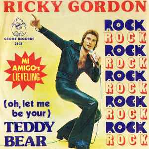

Campamento Guerreros del Metal
Campamento Guerreros del Metal
Promocíon Especial hasta agotar entradas
Este año contaremos con exclusivos conciertos benéficos,
como "Los Colegiales de la Calleja de atras" o los aclamados
en todo su barrio "Cenando con un jubilado" que daran todo
este año para complacer a los espectadores mas ansiosos.
| Banda Músical | Precio | Descuento Joven |
|---|---|---|
| ¡Homenaje al Gran Sam Cooke! | 7$ | 5% |
| ¡Los Crooks! | 5$ | 2% |
| ¡Link Wrays! | 10$ | 6% |
|  ¡Ricky Gordon en directo! | 8$ | 4% |